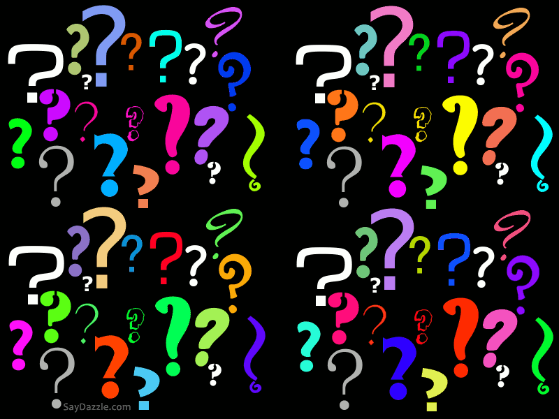
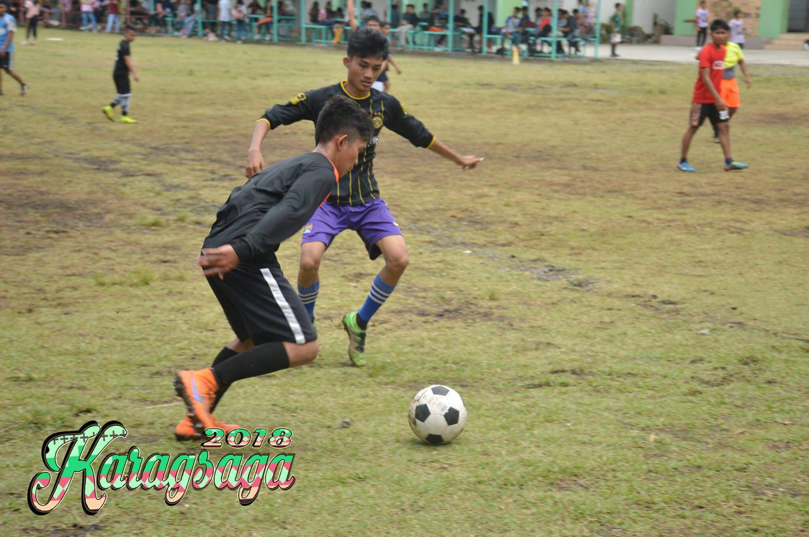
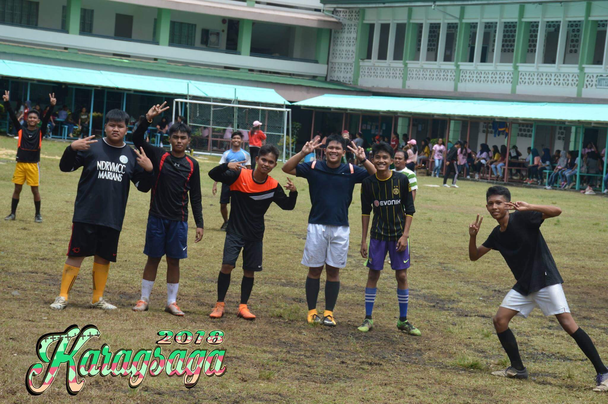
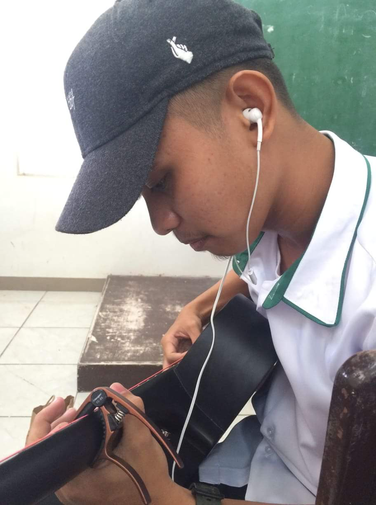
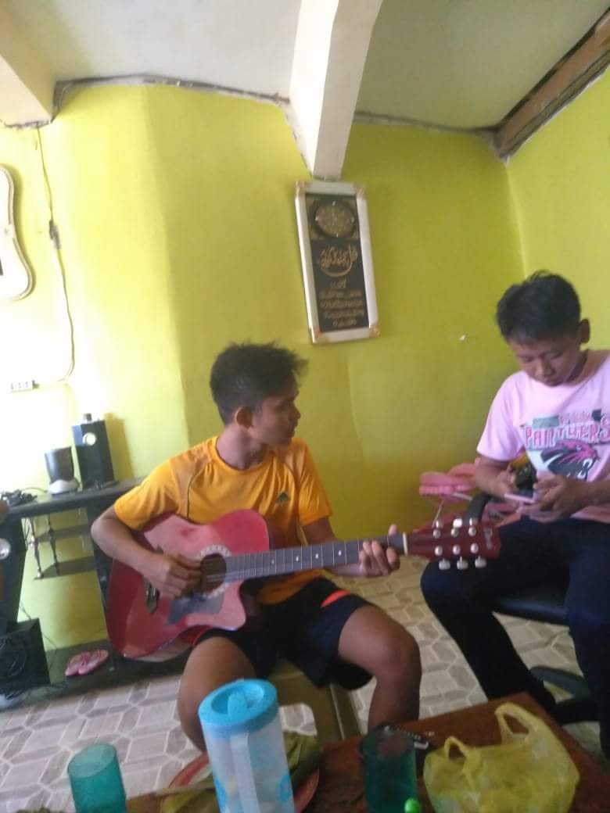

My Hobbies
|

|
Playing Football


playing football is my first hobby in my life. I started playing when I was in grade 5. Actually I didn't intendedly join play football but my friends forcely convienced me to join so I joined and play football without a doubt. It was hard for me to learn kicking balls, ball control, and accelerate my speed. I started from the very beginning. In 2 months, I already knew how to play football, what is the rules and regulation and what really football is.I didn't expect that I could easily learn football.
what is Football?
-For me, football is my life. without football my life is boring and I could not reach where I am right now. Because of football, I met a lot of friends and I met a professional football player. Football is not about winning or getting fame, football is about loving and respect. We win, we lose. That's is how we play. We learned from our mistake. Football is not just a game, it is part of out life.If I had a chance to join a Football club, I Would pick FC Barcelona. This was my favorite team.
Playing Guitar


-Playing guitar is my hobby too. I learned how to play guitar when I'm in grade 8. It was so beautiful and wonderful. It relax me everytime I played it. It can helps me to prevent depression. I learned playing guitar not for showing it and brag for many people, I learned it because when Im alone Iwould play it and feel every sound that I play.